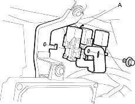
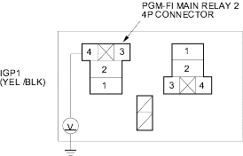
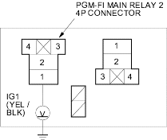
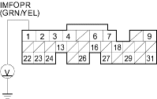

- Turn the ignition switch OFF.
- Remove the glove box (see page 20-220), then remove the PGM-FI main relay 2 (A).

- Turn the ignition switch ON (II).
- Measure voltage between the PGM-FI main relay 2 4P connector terminal No. 4 and body ground.

Is there battery voltage?
YES |
- Go to step 5. |
NO |
- Repair open in the wire between the PGM-FI main relay 1 and the PGM-FI main relay 2. |

- Measure voltage between the PGM-FI main relay 2 4P connector terminal No. 1 and body ground.

Is there battery voltage?
YES |
- Go to step 6. |
NO |
- Repair open in the wire between the under-dash fuse/relay box and PGM-FI main relay 2. |
- Turn the ignition switch OFF.
- Disconnect ECM/PCM connector E (31P).
- Check for continuity between the PGM-FI main relay 2 4P connector terminal No. 3 and ECM/PCM connector terminal E1.

Is there continuity?
YES |
- Go to step 9. |
NO |
- Repair open in the wire between the PGM-FI main relay 2 and the ECM/PCM (E1). |